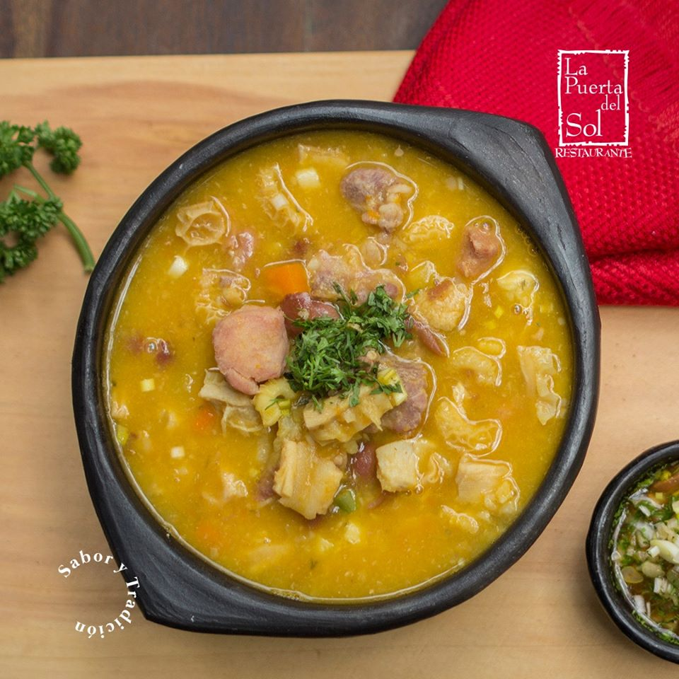

Los mejores restaurantes de Bucaramanga

Reseña
Este es uno de los mejores restaurantes de comida típica en Bucaramanga. Con una diversidad gigante de platos, Cabrón es una opción excelente si te gusta probar nuevos sabores. Ganó el Certificado de Excelencia en los años 2018 y 2019. Dos años consecutivos es bastante. El espacio es muy acogedor. Tiene acceso para silla de ruedas, por lo que no debería haber problemas por ese lado. Además, hay expendio de bebidas alcohólicas, por lo que podrás beberte un vino mientras pruebas unos estupendos medallones de solomo. La relación calidad-precio está bastante balanceada para una comida de calidad. Eso sí, la atención puede ser un poco lenta en días concurridos, pero te aseguramos que vale la pena la espera. Ofrecen comida para llevar, pero si quieres comer allí, tendrás que hacer una reservación con anterioridad.


Contacto
Ubicación: Carrera 35 42 17, Bucaramanga 680002 Colombia.
Información de contacto: +57 313 2878726.
El Viejo Chiflas

Reseña
En El Viejo Chiflas podrás ir a cualquier hora, ya que ofrecen desayunos, almuerzos, cenas y brunchs. El establecimiento ganó el Certificado de Excelencia en el año 2017. Este restaurante hace entregas a domicilio, que llegan tan frescas, como si comieras en el local. Puedes pedir comida para llevar, hacer reservaciones y beber todo tipo de alcohol. Además, hay acceso para silla de ruedas y disponen de sillas altas para niños. Ha recibido las mejores reseñas respecto a la calidad de la comida y el servicio, no obstante, los precios no son precisamente bajos. Si quieres probar una auténtica comida santandereana, del más alto estándar, entonces no puedes dejar de ir a El Viejo Chiflas.


Contacto
Ubicación: Carrera 33 #34-10, Bucaramanga, Colombia.
Información de contacto: +57 7 6320640.
Restaurante la puerta del sol

Reseña
En el Restaurante La Puerta Del Sol disfrutarás de una maravillosa comida auténtica de Bucaramanga en el almuerzo o la cena. Ha ganado el Certificado de Excelencia los años 2016 y 2019. Entre los servicios que ofrecen, están estacionamiento, reservaciones, restaurante privado, comida para llevar, Wi-Fi gratis, sillas altas y acceso para silla de ruedas. Además, hay expendio de bebidas alcohólicas. No obstante, es probable que el estacionamiento esté lleno en los días con más afluencia. El local es bastante amplio y cómodo, además de que la decoración es muy agradable. La decoración de los platos es muy llamativa y elegante, y el sabor es excepcional. Respecto a los costos, la relación calidad precio es aceptable, aunque puede parecerle caro a algunas personas.



Contacto
Ubicación: Carrera 30 65-08, Bucaramanga, Colombia.
Información de contacto: 6435077.